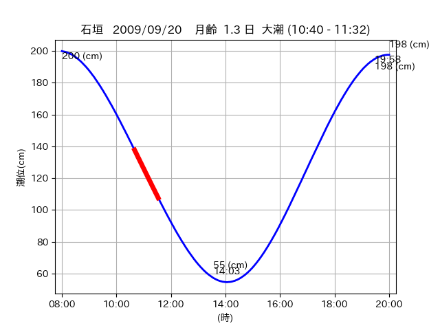
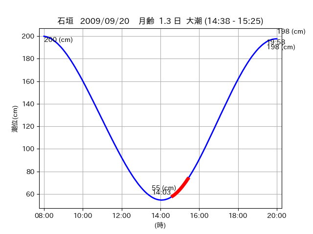

<!DOCTYPE html>
<html>
<head>
    
    <meta http-equiv="content-type" content="text/html; charset=UTF-8" />
    
        <script>
            L_NO_TOUCH = false;
            L_DISABLE_3D = false;
        </script>
    
    <style>html, body {width: 100%;height: 100%;margin: 0;padding: 0;}</style>
    <style>#map {position:absolute;top:0;bottom:0;right:0;left:0;}</style>
    <script src="https://cdn.jsdelivr.net/npm/leaflet@1.9.3/dist/leaflet.js"></script>
    <script src="https://code.jquery.com/jquery-3.7.1.min.js"></script>
    <script src="https://cdn.jsdelivr.net/npm/bootstrap@5.2.2/dist/js/bootstrap.bundle.min.js"></script>
    <script src="https://cdnjs.cloudflare.com/ajax/libs/Leaflet.awesome-markers/2.0.2/leaflet.awesome-markers.js"></script>
    <link rel="stylesheet" href="https://cdn.jsdelivr.net/npm/leaflet@1.9.3/dist/leaflet.css"/>
    <link rel="stylesheet" href="https://cdn.jsdelivr.net/npm/bootstrap@5.2.2/dist/css/bootstrap.min.css"/>
    <link rel="stylesheet" href="https://netdna.bootstrapcdn.com/bootstrap/3.0.0/css/bootstrap-glyphicons.css"/>
    <link rel="stylesheet" href="https://cdn.jsdelivr.net/npm/@fortawesome/fontawesome-free@6.2.0/css/all.min.css"/>
    <link rel="stylesheet" href="https://cdnjs.cloudflare.com/ajax/libs/Leaflet.awesome-markers/2.0.2/leaflet.awesome-markers.css"/>
    <link rel="stylesheet" href="https://cdn.jsdelivr.net/gh/python-visualization/folium/folium/templates/leaflet.awesome.rotate.min.css"/>
    
            <meta name="viewport" content="width=device-width,
                initial-scale=1.0, maximum-scale=1.0, user-scalable=no" />
            <style>
                #map_9664f946cc4d14b030e0ffa33dbc2f61 {
                    position: relative;
                    width: 2048.0px;
                    height: 1600.0px;
                    left: 0.0%;
                    top: 0.0%;
                }
                .leaflet-container { font-size: 1rem; }
            </style>
        
</head>
<body>
    
    
            <div class="folium-map" id="map_9664f946cc4d14b030e0ffa33dbc2f61" ></div>
        
</body>
<script>
    
    
            var map_9664f946cc4d14b030e0ffa33dbc2f61 = L.map(
                "map_9664f946cc4d14b030e0ffa33dbc2f61",
                {
                    center: [24.285, 123.74],
                    crs: L.CRS.EPSG3857,
                    ...{
  "zoom": 12,
  "zoomControl": true,
  "preferCanvas": false,
}

                }
            );

            

        
    
            var tile_layer_52d83f2ea794e3abc6466587f11eb199 = L.tileLayer(
                "https://cyberjapandata.gsi.go.jp/xyz/seamlessphoto/{z}/{x}/{y}.jpg",
                {
  "minZoom": 0,
  "maxZoom": 18,
  "maxNativeZoom": 18,
  "noWrap": false,
  "attribution": "\u5730\u7406\u9662\u5730\u56f3",
  "subdomains": "abc",
  "detectRetina": false,
  "tms": false,
  "opacity": 1,
}

            );
        
    
            tile_layer_52d83f2ea794e3abc6466587f11eb199.addTo(map_9664f946cc4d14b030e0ffa33dbc2f61);
        
    
            var marker_2354a93b9e222ca9b6de2c9e451352a4 = L.marker(
                [24.2757, 123.7177],
                {
}
            ).addTo(map_9664f946cc4d14b030e0ffa33dbc2f61);
        
    
            var icon_906df028bec6a76dad715bcae54c5988 = L.AwesomeMarkers.icon(
                {
  "markerColor": "orange",
  "iconColor": "white",
  "icon": "info-sign",
  "prefix": "glyphicon",
  "extraClasses": "fa-rotate-0",
}
            );
        
    
        var popup_311e3758d0124cabdea750812861c054 = L.popup({
  "maxWidth": "100%",
});

        
            
                var html_65e779e91444cf87b0899102dae9ec79 = $(`<div id="html_65e779e91444cf87b0899102dae9ec79" style="width: 100.0%; height: 100.0%;"><table><tr><td></td></tr><tr><td><center>20090920 No.1 </center></table></td></tr></table</div>`)[0];
                popup_311e3758d0124cabdea750812861c054.setContent(html_65e779e91444cf87b0899102dae9ec79);
            
        

        marker_2354a93b9e222ca9b6de2c9e451352a4.bindPopup(popup_311e3758d0124cabdea750812861c054)
        ;

        
    
    
                marker_2354a93b9e222ca9b6de2c9e451352a4.setIcon(icon_906df028bec6a76dad715bcae54c5988);
            
    
            var poly_line_2649b715ac018c34eaca58677397c478 = L.polyline(
                [[24.2757, 123.7177], [24.2763, 123.7127]],
                {"bubblingMouseEvents": true, "color": "#FF00FF", "dashArray": null, "dashOffset": null, "fill": false, "fillColor": "#FF00FF", "fillOpacity": 0.2, "fillRule": "evenodd", "lineCap": "round", "lineJoin": "round", "noClip": false, "opacity": 1.0, "smoothFactor": 1.0, "stroke": true, "weight": 3}
            ).addTo(map_9664f946cc4d14b030e0ffa33dbc2f61);
        
    
            var marker_ec89d062b4ffbf293f9d1ac17b25b6d5 = L.marker(
                [24.2758, 123.7155],
                {
}
            ).addTo(map_9664f946cc4d14b030e0ffa33dbc2f61);
        
    
            var icon_b29bbebab06e04804266a817a421ce88 = L.AwesomeMarkers.icon(
                {
  "markerColor": "orange",
  "iconColor": "white",
  "icon": "info-sign",
  "prefix": "glyphicon",
  "extraClasses": "fa-rotate-0",
}
            );
        
    
        var popup_69bb490574190f977dc07ae023135598 = L.popup({
  "maxWidth": "100%",
});

        
            
                var html_707f937145124c95d239178b25e94d6f = $(`<div id="html_707f937145124c95d239178b25e94d6f" style="width: 100.0%; height: 100.0%;"><table><tr><td></td></tr><tr><td><center>20090920 No.2 </center></table></td></tr></table</div>`)[0];
                popup_69bb490574190f977dc07ae023135598.setContent(html_707f937145124c95d239178b25e94d6f);
            
        

        marker_ec89d062b4ffbf293f9d1ac17b25b6d5.bindPopup(popup_69bb490574190f977dc07ae023135598)
        ;

        
    
    
                marker_ec89d062b4ffbf293f9d1ac17b25b6d5.setIcon(icon_b29bbebab06e04804266a817a421ce88);
            
    
            var poly_line_6c54a4ff83e809320c7c72f176754cf2 = L.polyline(
                [[24.2758, 123.7155], [24.2762, 123.7197]],
                {"bubblingMouseEvents": true, "color": "#FF00FF", "dashArray": null, "dashOffset": null, "fill": false, "fillColor": "#FF00FF", "fillOpacity": 0.2, "fillRule": "evenodd", "lineCap": "round", "lineJoin": "round", "noClip": false, "opacity": 1.0, "smoothFactor": 1.0, "stroke": true, "weight": 3}
            ).addTo(map_9664f946cc4d14b030e0ffa33dbc2f61);
        
    
            var marker_05d157e7f293048509048b4b00f5f4be = L.marker(
                [24.2868, 123.7376],
                {
}
            ).addTo(map_9664f946cc4d14b030e0ffa33dbc2f61);
        
    
            var icon_757639fa96c8f7521427876d2ef6c80e = L.AwesomeMarkers.icon(
                {
  "markerColor": "orange",
  "iconColor": "white",
  "icon": "info-sign",
  "prefix": "glyphicon",
  "extraClasses": "fa-rotate-0",
}
            );
        
    
        var popup_03159e938c9584b61c55d85e3a1f73ab = L.popup({
  "maxWidth": "100%",
});

        
            
                var html_096c05edf0efb68f78c97e09298b5ee6 = $(`<div id="html_096c05edf0efb68f78c97e09298b5ee6" style="width: 100.0%; height: 100.0%;"><table><tr><td></td></tr><tr><td><center>20090920 No.3 </center></table></td></tr></table</div>`)[0];
                popup_03159e938c9584b61c55d85e3a1f73ab.setContent(html_096c05edf0efb68f78c97e09298b5ee6);
            
        

        marker_05d157e7f293048509048b4b00f5f4be.bindPopup(popup_03159e938c9584b61c55d85e3a1f73ab)
        ;

        
    
    
                marker_05d157e7f293048509048b4b00f5f4be.setIcon(icon_757639fa96c8f7521427876d2ef6c80e);
            
    
            var poly_line_a0e64390405a314da4fdaade7afa77a1 = L.polyline(
                [[24.2868, 123.7376], [24.2832, 123.743]],
                {"bubblingMouseEvents": true, "color": "#00FFFF", "dashArray": null, "dashOffset": null, "fill": false, "fillColor": "#00FFFF", "fillOpacity": 0.2, "fillRule": "evenodd", "lineCap": "round", "lineJoin": "round", "noClip": false, "opacity": 1.0, "smoothFactor": 1.0, "stroke": true, "weight": 3}
            ).addTo(map_9664f946cc4d14b030e0ffa33dbc2f61);
        
</script>
</html>